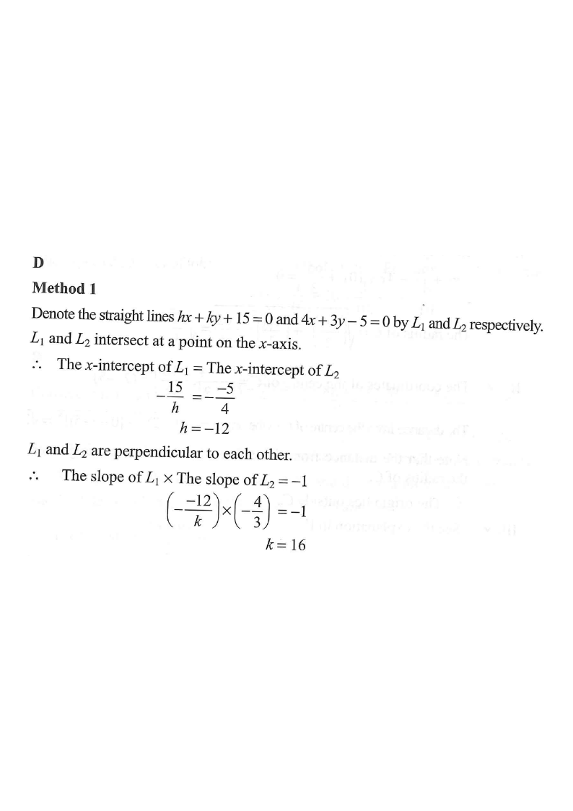

Perpendicular lines meeting on the x-axis · Interactive step-by-step solution
\(L_1:\ hx+ky+15=0\)\(L_2:\ 4x+3y-5=0\)Intersection on x-axisCentre of reasoningx-axis / y-axis
Question [2016MC#25]
If the straight lines $hx+ky+15=0$ and $4x+3y-5=0$ are perpendicular to each other and intersect at a point on the $x$-axis, then $k=$
A. $-12$B. $-4$C. $3$D. $16$

Figure (original exam diagram)
Step 1 · Name the two lines
Denote the given lines by
$$L_1:\ hx+ky+15=0 \qquad L_2:\ 4x+3y-5=0$$
Since the point of intersection lies on the x-axis, it is the same point where each line crosses the $x$-axis (i.e. $y=0$).
Hint: on the $x$-axis, $y=0$. Put $y=0$ into each equation to find each line's x-intercept.
Step 2 · x-intercepts agree
x-Intercept of a Line\(\text{put }y=0:\quad ax+c=0\ \Longrightarrow\ x=-\dfrac{c}{a}\)Both lines cross the \(x\)-axis at the same point, so their \(x\)-intercepts are equal.
For $L_2$, put $y=0$:
$$4x-5=0 \Rightarrow x=\frac{5}{4}$$
For $L_1$, put $y=0$:
$$hx+15=0 \Rightarrow x=-\frac{15}{h}$$
Both lines meet the $x$-axis at the same point, so:
$$-\frac{15}{h}=\frac{5}{4}$$
$$\Rightarrow -60=5h \Rightarrow h=-12$$
Step 3 · Use perpendicularity
Slope of a Line in General Form\(ax+by+c=0\ \Longrightarrow\ m=-\dfrac{a}{b}\quad(b\neq 0)\)This gives the slopes \(-\dfrac{h}{k}\) and \(-\dfrac{4}{3}\) directly from the coefficients.
Slopes from $ax+by+c=0 \Rightarrow$ slope $=-\dfrac{a}{b}$:
Slope of $L_1=-\dfrac{h}{k}$
Slope of $L_2=-\dfrac{4}{3}$
Perpendicular lines satisfy (slope of $L_1$)×(slope of $L_2$) $=-1$:
Condition for Perpendicular Lines\(m_{1}\,m_{2}=-1\)After \(h=-12\), the condition \(\left(\dfrac{12}{k}\right)\left(-\dfrac{4}{3}\right)=-1\) gives \(k=16\).
Question. If the straight lines \(hx+ky+18=0\) and \(2x+3y-6=0\) are perpendicular to each other and intersect at a point on the \(x\)-axis, then \(k=\) A. \(3\) B. \(4\) C. \(6\) D. \(9\) [1 mark]
Show the worked solution
Step 1. Put \(y=0\) in \(2x+3y-6=0\): \(2x=6\), so the common \(x\)-intercept is \(x=3\).
Step 2. Put \(y=0\) in \(hx+ky+18=0\): \(hx+18=0\), so \(x=-\dfrac{18}{h}=3\), giving \(h=-6\).
Step 3. Slopes: \(L_{1}\) has slope \(-\dfrac{h}{k}=\dfrac{6}{k}\); \(L_{2}\) has slope \(-\dfrac{2}{3}\).
Step 4. Perpendicular: \(\left(\dfrac{6}{k}\right)\left(-\dfrac{2}{3}\right)=-1\), i.e. \(-\dfrac{4}{k}=-1\), so \(k=4\).
Step 5. Check: \(-6x+4y+18=0\) has \(x\)-intercept \(3\) \u2713 and slope \(\dfrac{6}{4}=\dfrac{3}{2}\), with \(\dfrac{3}{2}\times\left(-\dfrac{2}{3}\right)=-1\) \u2713.